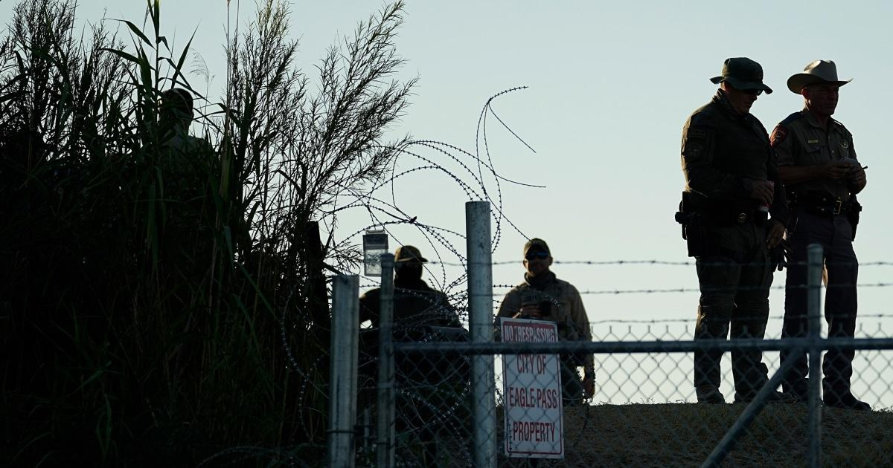

Texas governor seizes public park on border to counter illegal immigrationSAN ANTONIO — Texas Gov. Greg Abbott has seized control of a public park in a town on the U.S.-Mexico border as part of his homegrown immigration enforcement operation, the town's mayor said in a video. The state’s forces moved in Wednesday night to take over Shelby Park in the border community of Eagle Pass, about two hours west of San Antonio. The park is along the U.S. side of the Rio Grande, the river border between the U.S. and Mexico. Eagle Pass Mayor Rolando Salinas posted a video to Facebook on Wednesday showing military vehicles lined up along a chain link fence that had been erected at an entrance to the park. “This is not something that we wanted. This is not something that we asked for as a city. I want to make that clear,” Salinas said in the video. He said he was told of the park's takeover on Wednesday morning in a call from a Texas Department of Public Safety (DPS) official who told him that the state was taking “full control” of the park "indefinitely." “Texas is holding the line at our southern border with miles of additional razor wire and anti-climb barriers to deter and repel the record-high levels of illegal immigration invited by President Biden’s reckless open border policies,” Abbott spokeswoman Renae Eze said in a statement. “Texas will continue to deploy Texas National Guard soldiers, DPS troopers, and more barriers, utilizing every tool and strategy to respond to President Biden’s ongoing border crisis.” The park became the center of controversy in July after Salinas declared it private so state DPS troopers could arrest migrants crossing there on charges of trespassing. The city later rescinded that declaration amid backlash from residents. For more from NBC Latino, sign up for our weekly newsletter. |
 |